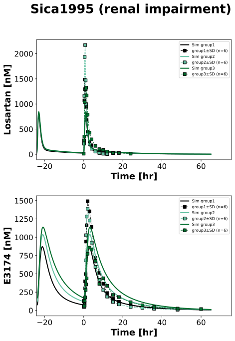
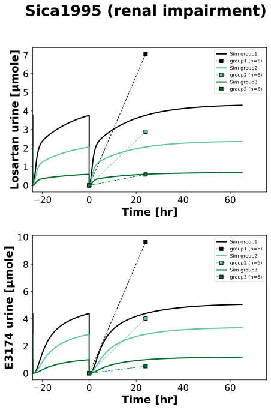

|  |
|  |
../../../../src/pkdb_models/models/losartan/experiments/studies/sica1995.py
from tokenize import group
from typing import Dict
from sbmlsim.data import DataSet, load_pkdb_dataframe
from sbmlsim.fit import FitMapping, FitData
from sbmlutils.console import console
from pkdb_models.models import losartan
from pkdb_models.models.losartan.experiments.base_experiment import (
LosartanSimulationExperiment,
)
from pkdb_models.models.losartan.experiments.metadata import (
Tissue, Route, Dosing, ApplicationForm, Health, \
Fasting, LosartanMappingMetaData, Coadministration, Genotype,
)
from sbmlsim.plot import Axis, Figure
from sbmlsim.simulation import Timecourse, TimecourseSim
from pkdb_models.models.losartan.helpers import run_experiments
class Sica1995(LosartanSimulationExperiment):
"""Simulation experiment of Sica1995."""
info = {
"[Cve_los]": "losartan",
"[Cve_e3174]": "exp3174",
"Aurine_los": "losartan_urine",
"Aurine_e3174": "exp3174_urine",
}
groups = {
"group1": "Normal renal function",
"group2": "Mild renal impairment",
"group3": "Severe renal impairment",
}
bodyweights = {
"group1": 84.6,
"group2": 75.7,
"group3": 75.4,
}
renal_functions = {
"group1": 112.2 * 0.85/100, # creatinine clearance (GFR)
"group2": 58.8 * 0.85/100, # creatinine clearance
"group3": 16.6 * 0.85/100, # creatinine clearance
}
def datasets(self) -> Dict[str, DataSet]:
dsets = {}
for fig_id in ["Fig1", "Fig2", "Tab2"]:
df = load_pkdb_dataframe(f"{self.sid}_{fig_id}", data_path=self.data_path)
for label, df_label in df.groupby("label"):
dset = DataSet.from_df(df_label, self.ureg)
# unit conversion to mole/l
if fig_id == "Fig1" and label.startswith("losartan_"):
dset.unit_conversion("mean", 1 / self.Mr.los)
elif fig_id == "Fig2" and label.startswith("exp3174_"):
dset.unit_conversion("mean", 1 / self.Mr.e3174)
dsets[f"{label}"] = dset
# console.print(dsets)
# console.print(dsets.keys())
return dsets
def simulations(self) -> Dict[str, TimecourseSim]:
Q_ = self.Q_
tcsims = {}
for group in self.groups:
tc0 = Timecourse(
start=0,
end=24 * 60, # [min]
steps=500,
changes={
**self.default_changes(),
"KI__f_renal_function": Q_(self.renal_functions[group], "dimensionless"),
"BW": Q_(self.bodyweights[group], "kg"),
"PODOSE_los": Q_(100, "mg") * self.Mr.los / self.Mr.losp,
},
)
tc1 = Timecourse(
start=0,
end=24 * 60, # [min]
steps=500,
changes={
"PODOSE_los": Q_(100, "mg") * self.Mr.los / self.Mr.losp,
"Aurine_los": Q_(0, "mmole"), # reset
"Aurine_e3174": Q_(0, "mmole"), # reset
},
)
tc2 = Timecourse(
start=0,
end=65 * 60, # [min]
steps=500,
changes={
"PODOSE_los": Q_(100, "mg") * self.Mr.los / self.Mr.losp,
"Aurine_los": Q_(0, "mmole"), # reset
"Aurine_e3174": Q_(0, "mmole"), # reset
},
)
tcsims[f"po_los100_{group}"] = TimecourseSim(
[tc0] + [tc1 for _ in range(5)] + [tc2],
time_offset=-6*24*60, # [min]
)
return tcsims
def fit_mappings(self) -> Dict[str, FitMapping]:
mappings = {}
for k, sid in enumerate(self.info):
name = self.info[sid]
for group in self.groups:
health = Health.HEALTHY if group == "group1" else Health.RENAL_IMPAIRMENT
mappings[f"fm_po_los100_{name}_{group}"] = FitMapping(
self,
reference=FitData(
self,
dataset=f"{name}_{group}",
xid="time",
yid="mean",
yid_sd="mean_sd",
count="count",
),
observable=FitData(
self, task=f"task_po_los100_{group}", xid="time", yid=sid,
),
metadata=LosartanMappingMetaData(
tissue=Tissue.PLASMA,
route=Route.PO,
application_form=ApplicationForm.TABLET,
dosing=Dosing.MULTIPLE,
health=health,
fasting=Fasting.FASTED,
coadministration=Coadministration.NONE,
genotype=Genotype.NR,
),
)
# console.print(mappings)
return mappings
def figures(self) -> Dict[str, Figure]:
return {
**self.fig1_2(),
**self.tab2(),
}
def fig1_2(self) -> Dict[str, Figure]:
fig = Figure(
experiment=self,
sid="Fig1_2",
num_rows=2,
name=f"{self.__class__.__name__} (renal impairment)",
)
plots = fig.create_plots(
xaxis=Axis(self.label_time, unit=self.unit_time, min=-24), legend=True
)
plots[0].set_yaxis(self.label_los, unit=self.unit_los)
plots[1].set_yaxis(self.label_e3174, unit=self.unit_e3174)
for k, sid in enumerate(["[Cve_los]", "[Cve_e3174]"]):
name = self.info[sid]
for group, group_name in self.groups.items():
color = self.renal_colors[group_name]
# simulation
plots[k].add_data(
task=f"task_po_los100_{group}",
xid="time",
yid=sid,
label=f"Sim {group}",
color=color,
)
# data
plots[k].add_data(
dataset=f"{name}_{group}",
xid="time",
yid="mean",
yid_sd="mean_sd",
count="count",
label=f"{group}",
color=color,
)
return {
fig.sid: fig,
}
def tab2(self) -> Dict[str, Figure]:
fig = Figure(
experiment=self,
sid="Tab2",
num_rows=2,
name=f"{self.__class__.__name__} (renal impairment)",
)
plots = fig.create_plots(
xaxis=Axis(self.label_time, unit=self.unit_time, min=-24), legend=True
)
plots[0].set_yaxis(self.label_los_urine, unit=self.unit_los_urine)
plots[1].set_yaxis(self.label_e3174_urine, unit=self.unit_e3174_urine)
for k, sid in enumerate(["Aurine_los", "Aurine_e3174"]):
name = self.info[sid]
for group, group_name in self.groups.items():
color = self.renal_colors[group_name]
# simulation
plots[k].add_data(
task=f"task_po_los100_{group}",
xid="time",
yid=sid,
label=f"Sim {group}",
color=color,
)
# data
plots[k].add_data(
dataset=f"{name}_{group}",
xid="time",
yid="mean",
yid_sd= None,
count="count",
label=f"{group}",
color=color,
)
return {
fig.sid: fig,
}
if __name__ == "__main__":
out = losartan.RESULTS_PATH_SIMULATION / Sica1995.__name__
out.mkdir(parents=True, exist_ok=True)
run_experiments(Sica1995, output_dir=Sica1995.__name__)
{kind=link}
{kind=link}